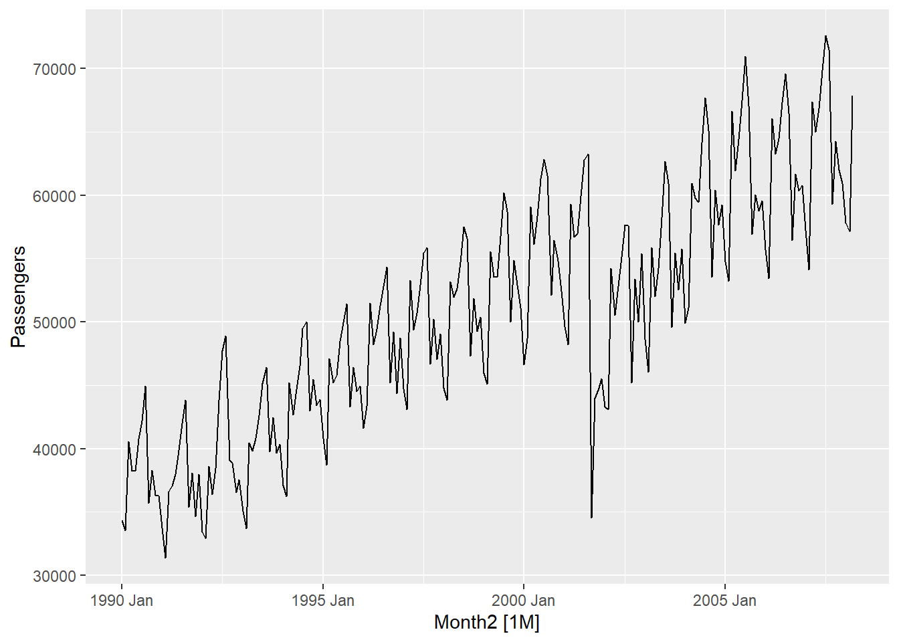
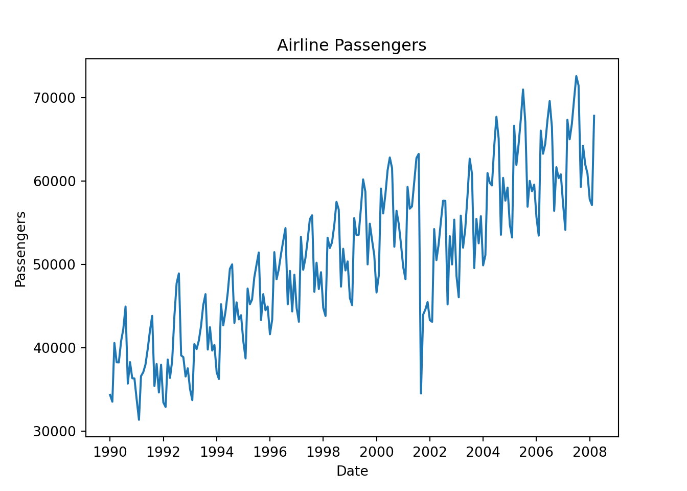
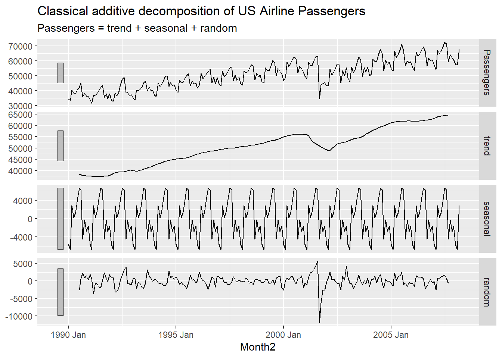
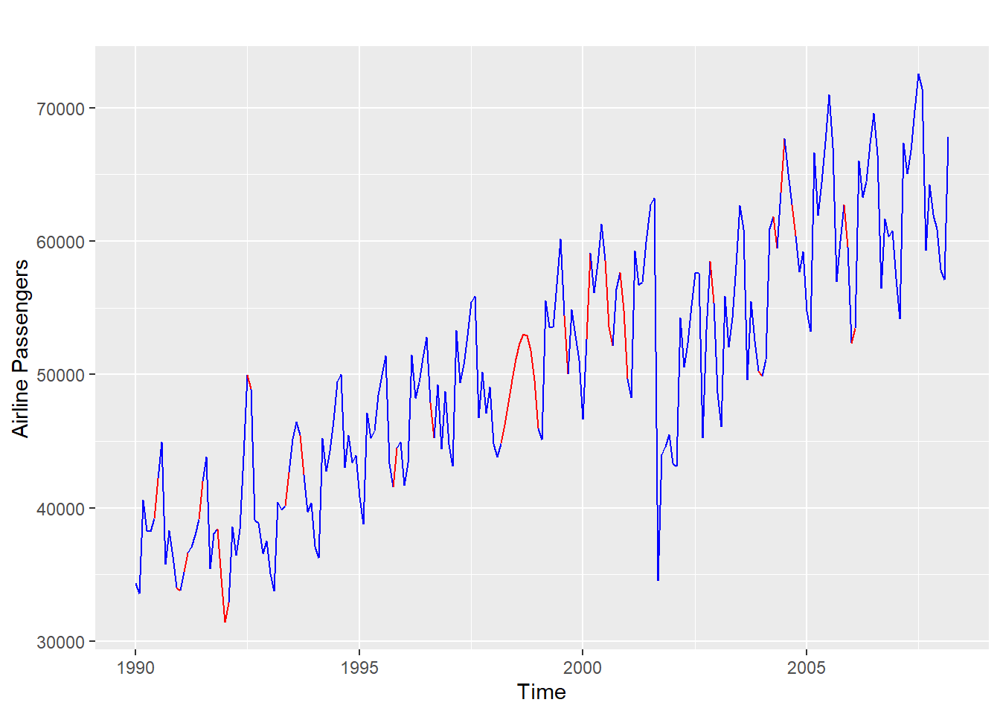
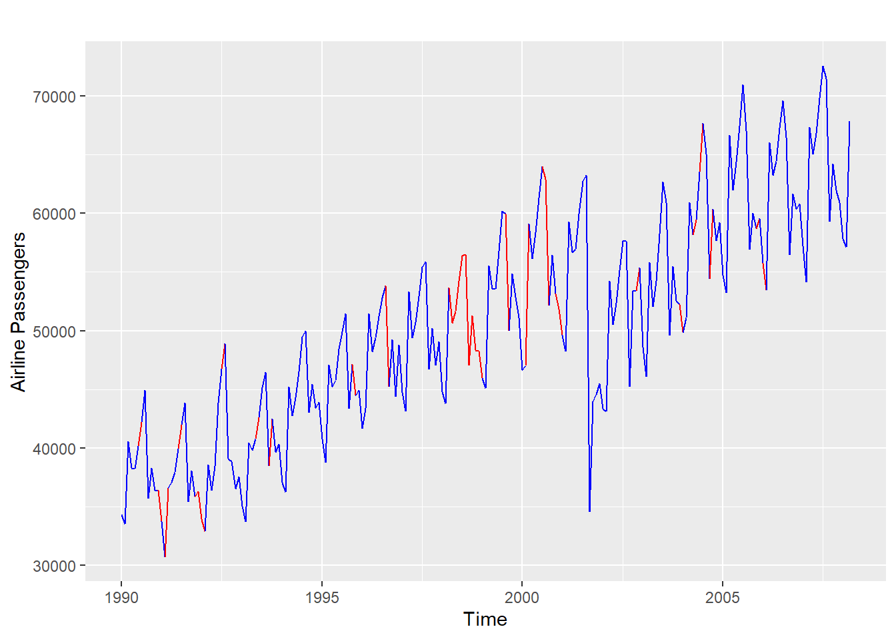
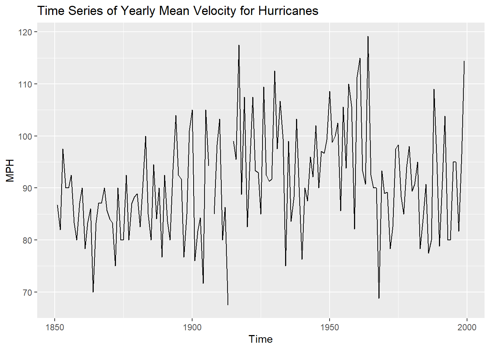
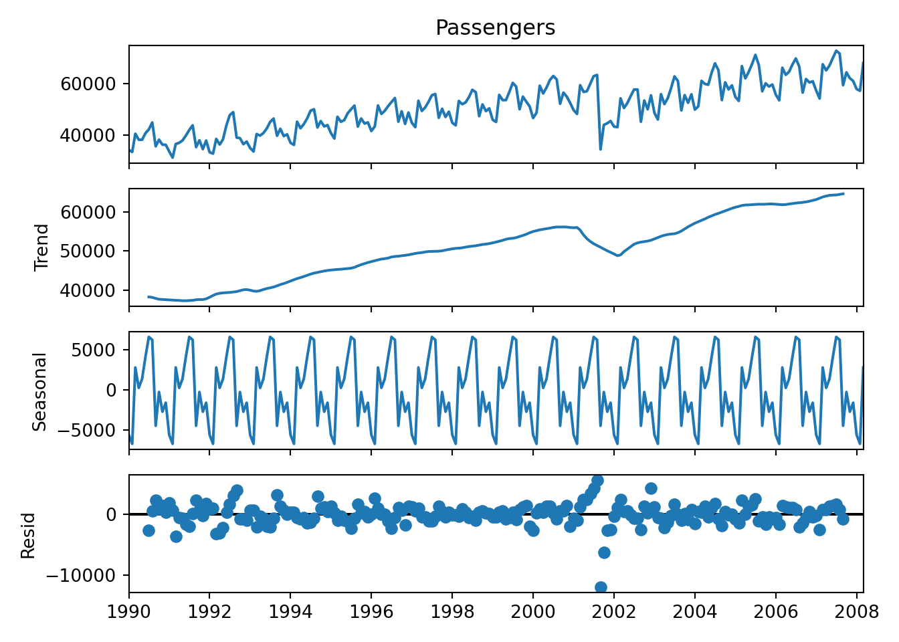

Chapter 2 Introduction
This document provides the code and output from Time Series. This is a living document and may be updated throughout the semester. First, here is a list of some the libraries that you will need:
library(readr)
library(fpp3)
library(fable)
library(fabletools)
library(lubridate)
library(expsmooth)
library(lmtest)
library(zoo)
library(seasonal)
library(ggplot2)
library(seasonalview)
library(aTSA)
### Note that the following packages and information is for Python:
library(reticulate)
use_python("C:\\ProgramData\\Anaconda3\\python.exe")The data sets that you will need are as follows:
file.dir = "https://raw.githubusercontent.com/sjsimmo2/TimeSeries/master/"
input.file1 = "usairlines.csv"
input.file2 = "steel.csv"
input.file3 = "leadyear2.csv"
input.file4 = "ebay9899.csv"
input.file5 = "fpp_insurance.csv"
input.file6 = "ar2.csv"
input.file7 = "MA2.csv"
input.file8 = "hurrican.csv"
USAirlines = read_csv(paste(file.dir, input.file1,sep = ""),show_col_types = FALSE)
Steel = read_csv(paste(file.dir, input.file2, sep = ""),show_col_types = FALSE)
Lead.Year = read_csv(paste(file.dir, input.file3, sep = ""),show_col_types = FALSE)
Ebay = read_csv(paste(file.dir, input.file4, sep = ""),show_col_types = FALSE)
Quotes= read_csv(paste(file.dir, input.file5, sep = ""),show_col_types = FALSE)
Y= read_csv(paste(file.dir, input.file6, sep = ""),show_col_types = FALSE)
x=read_csv(paste(file.dir, input.file7, sep = ""),show_col_types = FALSE)
hurricane=read_csv(paste(file.dir, input.file8, sep = ""),show_col_types = FALSE)
temp<-read_csv("Q:\\My Drive\\Fall 2017 - Time Series\\DataR\\minntemp.csv", show_col_types = FALSE)For most of the applications we will be using, you will first need to create a tsibble. In order to create a tsibble, you need to have a column that identifies the date (which we will indicate with “index”). The code below creates tsibble for the Steel data set and the Minneapolis temperature data set and plots the data:
Steel <- Steel |> mutate(date = seq(ymd('1932-07-01'),ymd('1980-01-01'),by='6 months'))
steel_ts<-Steel |> mutate(Month=yearmonth(date)) |> as_tsibble(index=Month)
autoplot(steel_ts,steelshp) + labs(title= "Iron and Steel Exports", subtitle = "Weight in tons", y= "Export") + theme_classic()
temp_ts<-temp |> mutate(date = seq(ymd('1900-01-01'),ymd('1966-03-01'),by='months')) |> mutate(Month=yearmonth(date)) |> as_tsibble(index=Month)
autoplot(temp_ts,Temp) + labs(title="Minneapolis temperature", y= "Temperature") + theme_classic()
Another example of creating a tsibble and time plot with the US Airlines data set:
USAirlines_ts <- USAirlines |> mutate(date=myd(paste(Month, Year, "1"))) |> mutate(Month2=yearmonth(date)) |> as_tsibble(index=Month2)
autoplot(USAirlines_ts,Passengers)
2.1 Other plots
Some other interesting plots we can look at is the seasonal plot (only if our time series has a seasonal component….if you have yearly data, this is not possible since each line in the graph represents one year).
USAirlines_ts |>
gg_season(Passengers, labels = "both") +
labs(y = "Passengers",
title = "Seasonal plot: US Airline Passengers")
We can further explore seasonal patterns by a subseries plot (again ONLY if there is a seasonal component):
USAirlines_ts |>
gg_subseries(Passengers) +
labs(
y = "Passengers",
title = "US Airline Passengers"
)
2.2 Time series decomposition
If your time series has a seasonal component to it, a useful visualization is the decomposition. We will first look at the STL decomposition (which can only do the additive decomposition, NOT multiplicative!). The following code creates the decomposition and then plots it:
# Time Series Decomposition ...STL#
dcmp <- USAirlines_ts |>
model(stl = STL(Passengers))
components(dcmp)## # A dable: 219 x 7 [1M]
## # Key: .model [1]
## # : Passengers = trend + season_year + remainder
## .model Month2 Passengers trend season_year remainder
## <chr> <mth> <dbl> <dbl> <dbl> <dbl>
## 1 stl 1990 Jan 34348 39033. -4676. -8.97
## 2 stl 1990 Feb 33536 38897. -5842. 481.
## 3 stl 1990 Mar 40578 38762. 1238. 578.
## 4 stl 1990 Apr 38267 38626. -563. 204.
## 5 stl 1990 May 38249 38494. 378. -623.
## 6 stl 1990 Jun 40792 38362. 2950. -519.
## 7 stl 1990 Jul 42225 38229. 5219. -1223.
## 8 stl 1990 Aug 44943 38090. 6551. 302.
## 9 stl 1990 Sep 35708 37951. -1956. -287.
## 10 stl 1990 Oct 38286 37812. 345. 129.
## # ℹ 209 more rows
## # ℹ 1 more variable: season_adjust <dbl>
We can visualize the time plot with the trend component overlaid with it:
components(dcmp) |>
as_tsibble() |>
autoplot(Passengers, colour="gray") +
geom_line(aes(y=trend), colour = "#D55E00") +
labs(
y = "Passengers",
title = "US Airline Passengers with trend overlaid"
)
We can also overlay plots with the seasonally adjusted values (plot below has both trend and seasonally adjusted overlaid):
components(dcmp) |>
as_tsibble() |>
autoplot(Passengers, colour="gray") +
geom_line(aes(y=season_adjust), colour = "#D55E00") +
labs(
y = "Passengers",
title = "US Airline Passengers with seasonally adjusted overlaid"
)
## Both
components(dcmp) |>
as_tsibble() |>
autoplot(Passengers, colour="gray") +
geom_line(aes(y=season_adjust), colour = "#D55E00") +
geom_line(aes(y=trend),colour="blue")+
labs(
y = "Passengers",
title = "US Airline Passengers "
)
Notice that the trend component is VERY similar to the “seasonally adjusted” data! Do you know what the difference between the lines are?
We can also do a classical decomposition (this can do an additive decomposition and a multiplicative decomposition…just change type = “multiplicative” to do a multiplicative decomposition).
USAirlines_ts |>
model(
classical_decomposition(Passengers, type = "additive")
) |>
components() |>
autoplot() +
labs(title = "Classical additive decomposition of US Airline Passengers")## Warning: Removed 6 rows containing missing values or values outside the
## scale range (`geom_line()`).
The last decomposition we will look at is the X11 decomposition (done by the government). This is a very complex algorithm that does the decomposition.
x11_dcmp <- USAirlines_ts |>
model(x11 = X_13ARIMA_SEATS(Passengers ~ x11())) |>
components()
autoplot(x11_dcmp) +
labs(title =
"Decomposition of US Airline Passengers using X-11.")
2.3 STL features
We can also look at the strength of the trend and seasonal components in with a STL decomposition:
## # A tibble: 1 × 9
## trend_strength seasonal_strength_year seasonal_peak_year
## <dbl> <dbl> <dbl>
## 1 0.976 0.919 7
## # ℹ 6 more variables: seasonal_trough_year <dbl>,
## # spikiness <dbl>, linearity <dbl>, curvature <dbl>,
## # stl_e_acf1 <dbl>, stl_e_acf10 <dbl>2.4 Missing values
We actually need to put the series in the OLD format to use the package imputeTS (will probably get updated, just not yet). We will illustrate this with the US Airlines data set (but first we need to create the missing values).
#### Make some missing values:
set.seed(19076)
miss_val<-sample(1:nrow(USAirlines),30,replace=F)
miss_val<-c(miss_val,102,104:107)
US_temp<-USAirlines
US_temp$Passengers[miss_val]<-NA
col_vector=rep("blue",nrow(USAirlines))
col_vector[miss_val]="red"
### Create ts using the old way:
library(imputeTS)##
## Attaching package: 'imputeTS'## The following object is masked from 'package:zoo':
##
## na.locflibrary(forecast)
Pass_miss<-ts(US_temp$Passengers,start = c(1990,1),frequency = 12)
ggplot_na_distribution(Pass_miss)+labs(y="US Airline Passengers")
# Interpolate the missing observations in this data set
Pass_impute<-Pass_miss %>% na_interpolation(option = "spline")
autoplot(Pass_impute,color=col_vector) + labs(y="Airline Passengers")
Pass_impute<-Pass_miss %>% na_seadec(algorithm = "interpolation")
autoplot(Pass_impute,color=col_vector) + labs(y="Airline Passengers")
2.5 Python code and results for Time Series plot
The following code shows the time series plot and classical decomposition (using additive model).
import pandas as pd
import numpy as np
import matplotlib.pyplot as plt
from matplotlib import pyplot
from statsmodels.tsa.seasonal import seasonal_decompose
from statsmodels.tsa.seasonal import STL
from statsforecast import StatsForecast
usair_p=pd.read_csv("Q:\\My Drive\\Fall 2017 - Time Series\\DataR\\usairlines.csv")
df=pd.date_range(start='1/1/1990', end='3/1/2008', freq='MS')
usair_p.index=pd.to_datetime(df)
plt.plot(usair_p["Passengers"])
plt.xlabel("Date")
plt.ylabel("Passengers")
plt.title("Airline Passengers")
plt.show()
## Classical Decomposition
result = seasonal_decompose(usair_p["Passengers"], model='additive', period=12)
result.plot()
pyplot.show()
You can also specify multiplicative by changing “additive” to “multiplicative” in the Python code. If you want to do the STL decomposition, then you can apply the following code:
import pandas as pd
import matplotlib.pyplot as plt
from matplotlib import pyplot
from statsmodels.tsa.seasonal import seasonal_decompose
from statsmodels.tsa.seasonal import STL
usair_p=pd.read_csv("Q:\\My Drive\\Fall 2017 - Time Series\\DataR\\usairlines.csv")
df=pd.date_range(start='1/1/1990', end='3/1/2008', freq='MS')
usair_p.index=pd.to_datetime(df)
## STL Decomposition
from statsforecast.models import MSTL
d = {'unique_id': 1, 'ds': usair_p.index, 'y': usair_p['Passengers']}
usair_sf = pd.DataFrame(data = d)
dcmp = StatsForecast(models = [MSTL(season_length = 12)], freq = 'M')
dcmp.fit(df = usair_sf)## StatsForecast(models=[MSTL])## data trend seasonal remainder
## 0 34348.0 39019.259582 -4656.824185 -14.435397
## 1 33536.0 38883.032235 -5824.359162 477.326927
## 2 40578.0 38749.492861 1252.473058 576.034080
## 3 38267.0 38618.252549 -554.514256 203.261707
## 4 38249.0 38488.211906 388.629101 -627.841007
## .. ... ... ... ...
## 214 61967.0 64483.390709 -2942.503405 426.112696
## 215 60907.0 64538.640065 -1897.489966 -1734.150099
## 216 57800.0 64584.717962 -6231.124988 -553.592974
## 217 57109.0 64621.674775 -7705.357902 192.683127
## 218 67818.0 64650.268751 3776.567142 -608.835893
##
## [219 rows x 4 columns]## array([<Axes: >, <Axes: >, <Axes: >, <Axes: >], dtype=object)
## The following code calculates the Fs and Ft (many thanks to Fred!)
data = usair_p["Passengers"]
# Perform STL decomposition
stl = STL(data, period=12) # Adjust period as needed for your data
result = stl.fit()
# Extract components
trend = result.trend
seasonal = result.seasonal
residual = result.resid
t_and_r = trend + residual
# Ensure all series are aligned
if not trend.empty and not residual.empty and not seasonal.empty:
# Calculate Trend Strength
var_residual = residual.var()
var_t_plus_r = t_and_r.var()
var_detrended = (data - trend).var()
if var_detrended == 0:
trend_strength = 0
print("Trend Strength: 0 (Detrended variance is zero)")
else:
trend_strength = 1 - (var_residual / var_t_plus_r)
trend_strength = max(0, trend_strength) # Avoid negative strength
print(f"Trend Strength: {trend_strength:.2f}")
# Calculate Seasonal Strength
var_seasonal = seasonal.var()
if var_detrended == 0:
seasonal_strength = 0
print("Seasonal Strength: 0 (Detrended variance is zero)")
else:
seasonal_strength = var_seasonal / var_detrended
seasonal_strength = max(0, seasonal_strength) # Avoid negative strength
print(f"Seasonal Strength: {seasonal_strength:.2f}")
else:
print("Trend, Seasonal, or Residual series is empty or misaligned.")## Trend Strength: 0.98
## Seasonal Strength: 0.922.6 SAS code for time series plot and decomposition
The following code is in SAS (creates the time series plot and the decomposition…which is the next section). The use of the id statement can only be used if the series has a properly formatted date column. Great thing about SAS is that if there is a missing value (or missing date), it will impute it for you. It can also aggregate easily in SAS. If you do not have a date column, you can still use this command, you will use seasonality = and then set the length of the season. However, if you use the seasonality option, SAS will not recognize missing dates.
Create library for data sets
libname Time ‘Q:Drive - Time Series’; run;
Time series plot and decomposition of Airline Passengers
proc timeseries data=Time.USAirlines plots=(series decomp sc); id date interval=month; var Passengers; run;
Time series and decomposition of Airline Passengers, but now the seasonal cycle is set to a year
proc timeseries data=Time.USAirlines plots=(series decomp sc) seasonality=12; var Passengers; run;
proc timeseries data=Time.Steel plots=(series decomp sc) seasonality=12; var steelshp; run;